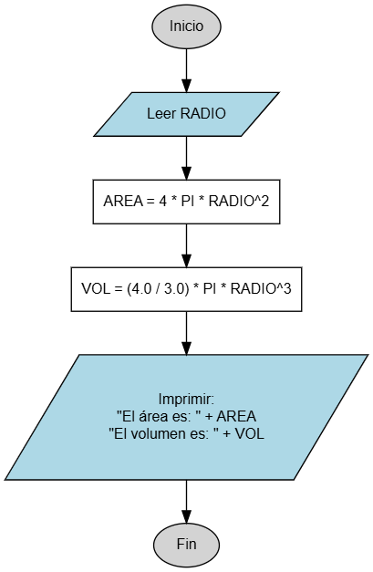

Área y Volumen de una Esfera
En este ejercicio pondrás a prueba tus habilidades para traducir fórmulas matemáticas a código Java. Trabajarás con constantes matemáticas importantes como PI y aprenderás a manejar potencias y operaciones con números decimales (tipo double) con precisión.

Objetivo
Crear un programa que solicite el radio de una esfera y calcule tanto su área superficial como su volumen, aplicando las fórmulas geométricas correspondientes.
Variables a Declarar
- RADIO:
double- El radio de la esfera que ingresará el usuario. - AREA:
double- Variable para almacenar el resultado del área. - VOL:
double- Variable para almacenar el resultado del volumen.
Fórmulas
Área = \(4 \times \pi \times RADIO^{2}\)
Volumen = \(\dfrac{4}{3} \times \pi \times RADIO^{3}\)
Operaciones a Realizar
- Leer el valor del
RADIO. - Calcular el
AREAmultiplicando 4 porMath.PIpor el radio al cuadrado. - Calcular el
VOL(Volumen) multiplicando la fracción 4.0/3.0 porMath.PIpor el radio al cubo. - Imprimir ambos resultados en pantalla.
Resultado Esperado
Ingrese el radio de la esfera: 5.0
El area de la esfera es: 314.1592...
El volumen de la esfera es: 523.5987...